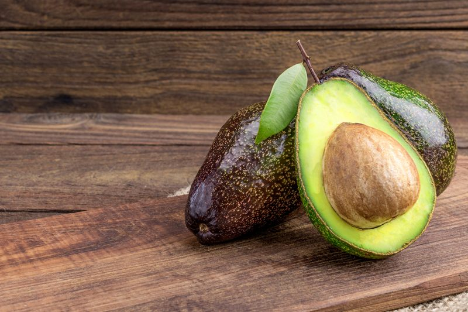

<!doctype html><html lang="en"><meta charset="utf-8"><meta name="viewport" content="width=device-width,initial-scale=1"><title>How to Use Avocados in Raw Recipes</title><link rel="stylesheet" href="../reader.css"><header><a href="../START_HERE.html">← Каталог и поиск</a> · <a href="https://nouveauraw.com/reference-library/ingredient-directory/avocado-fat-replacer/">Оригинал</a> · Личная копия, 10.09.2026 · © Amie Sue</header><main><div id="post-3297" class="post-3297 post type-post status-publish format-standard has-post-thumbnail hentry category-free-recipes category-ingredient-directory category-techniques-free" data-source-url="https://nouveauraw.com/free-recipes/avocado-fat-replacer/">

	<h2 class="fancy">Avocado (fat replacer, emulsifier)</h2>
													    <div class="featured content"></div>
    <div class="clear"></div>


				<div>
<div>
<div style="display: none;">Avocado</div>
<h3 style="text-align: justify;">Avocado facts:</h3>
<ul style="text-align: justify;">
<li style="text-align: justify;">Avocado is a fatty fruit with a creamy consistency.</li>
<li style="text-align: justify;">Avocados contain high quality essential fatty acids and proteins that are easily digested.</li>
<li style="text-align: justify;">Because of their low sugar content and absence of starch, avocados are excellent for diabetics or sugar-sensitive disorders.</li>
<li style="text-align: justify;">This fruit contains vitamins A, B1, B2, B3, C, iron, phosphorous and magnesium.</li>
<li style="text-align: justify;">Avocado is high in vitamin E which slows down aging.</li>
<li style="text-align: justify;">They are a slow burning fuel compared with fruit and vegetable juices which digest quickly.</li>
<li style="text-align: justify;">The avocado, or alligator pear, is a common evergreen found in Mexico and Central and South America. There are over 400 varieties.</li>
<li style="text-align: justify;">Blended with fruit, it produces a highly nutritious baby food.</li>
</ul>
<p><a href="../assets/be47b7e948d3eae55924035f.jpg" rel="attachment wp-att-165504"></a></p>
<h3 style="text-align: justify;">Avocado Varieties:</h3>
<ul style="text-align: justify;">
<li>Hass avocado ~ rich and creamy.  Best for guacamole, mashing, sauces, and soups.</li>
<li>Fuete avocado ~ slightly less rich and creamy</li>
<li>Pinkerton  avocado ~ slightly less rich and creamy</li>
<li>Reed avocado ~ flesh stays firm when ripe, best for salads</li>
</ul>
<h3 style="text-align: justify;">What does it replace in recipes?</h3>
<ul style="text-align: justify;">
<li>Avocado work great in recipes to replace butter, cream, eggs, and mayonnaise in sauces, dips, mousses, and desserts.</li>
</ul>
<h3 style="text-align: justify;"><a href="../assets/7df3526aa2a2febd6f8211c3.jpg" rel="attachment wp-att-165503"></a>How to use it?</h3>
<ul style="text-align: justify;">
<li>When incorporating it into a recipe be careful that you don’t over process it.</li>
<li>Works great in raw soups, salad dressings, as a spread on crackers or raw breads and many other recipes.</li>
<li>TIP: Sprinkle lemon or lime juice over peeled avocados to prevent discoloring.</li>
</ul>
<h3 style="text-align: justify;">How to buy an Avocado:</h3>
<ul style="text-align: justify;">
<li>Unripe avocados will be dark green and hard.</li>
<li>As they begin to ripen, they turn a dark greenish-brown and become slightly soft to thumb pressure.</li>
<li>The inner flesh of a ripened avocado will be a gorgeous lime green without any brown spots.</li>
<li>The easiest way to remove the flesh is to cut the fruit in half, lengthwise, and twist open.</li>
<li>The pit will remain on one side. Remove by embedding knife into the pit and twisting.</li>
</ul>
<h3 style="text-align: justify;">How to ripen an Avocado:</h3>
<ul style="text-align: justify;">
<li>To ripen avocados slowly, put them in the fruit bin of your refrigerator (no apples please, that would be mixed signals). Avocados can be kept for up to two weeks this way. They will ripen very slowly, so when you take them out of the refrigerator they will be ready to eat in a couple of days.</li>
<li>To ripen an avocado faster, place in a brown paper bag and set in your oven with only the oven light on.</li>
<li>Once avocados are at a desired stage of ripeness, they may be refrigerated for up to 2 to 3 days</li>
</ul>
<h3 style="text-align: justify;">Freezing Avocados:</h3>
<ul style="text-align: justify;">
<li style="text-align: justify;">You can freeze mashed fresh, ripe avocados if you want to have an “emergency supply” of avocados on hand for guacamole.</li>
<li style="text-align: justify;">To freeze, mash the avocados with a fork.  Add one teaspoon lime or lemon juice per avocado and mix well.  The best way to freeze the prepared mashed avocados is to use a freezer-safe ziplock bag.  Fill the bag with the mashed avocado. Remove the air from the bag and then zip closed and freeze.</li>
<li style="text-align: justify;">Thaw the frozen avocados in the refrigerator or place the container in a bowl of cool water to accelerate thawing.</li>
</ul>
</div>
</div>
<div class="copyright" style="display:none;">© AmieSue.com</div>  	

	
	<!-- Fetched from cache --> 
<!-- print friendly code embedded in template for posts -->

<div style="width:180px;float:right;text-align:center;">
<div class="printfriendly pf-button  pf-alignright">
                    <a href="reference-library-ingredient-directory-avocado-fat-replacer-82305c5ea6.html" rel="nofollow" title="Printer Friendly, PDF &amp; Email">
                    <span id="printfriendly-text2" class="pf-button-text">Print this Recipe</span>
                    </a>
                </div></div>

    	<div class="clear"></div>
 	

	
	
	<div class="clear"></div>


	<!-- #comments -->
<!-- BeginFooter -->

	<!-- #footer -->

<!-- EndFooter -->

</div></main></html>